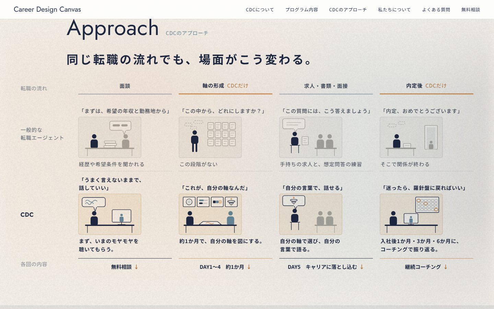
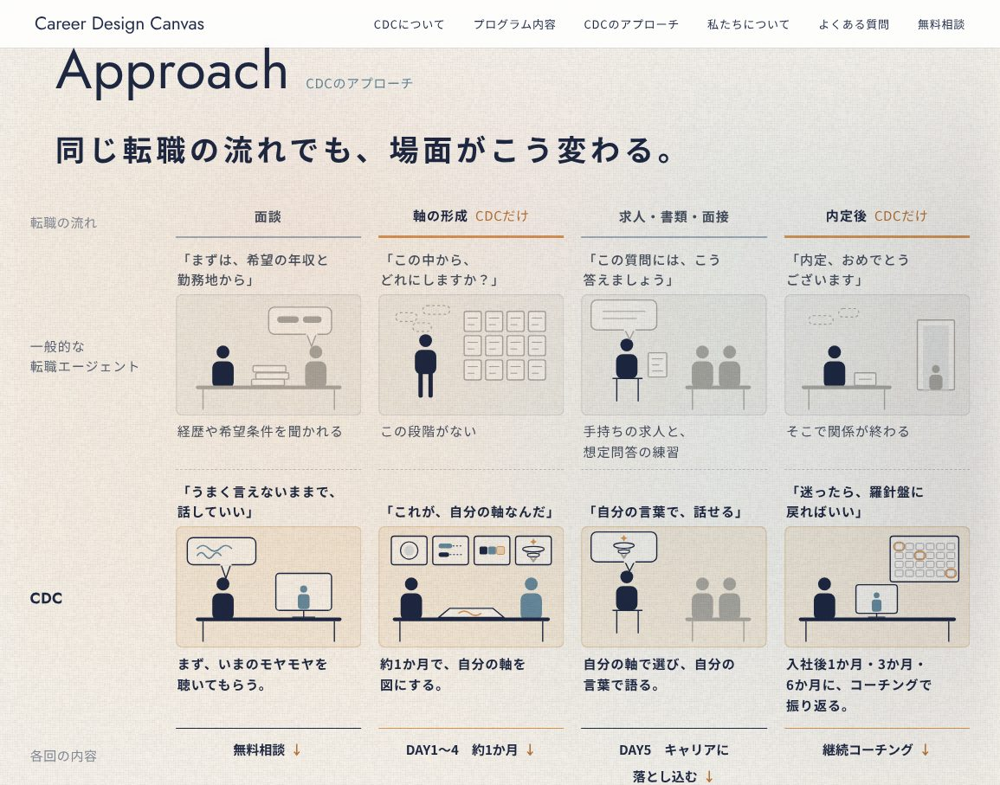
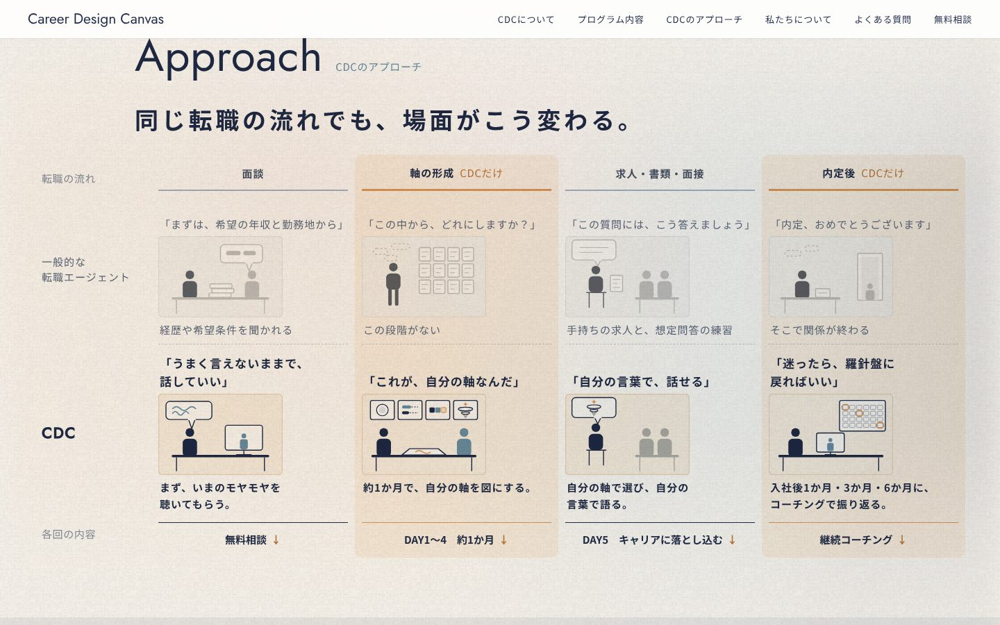
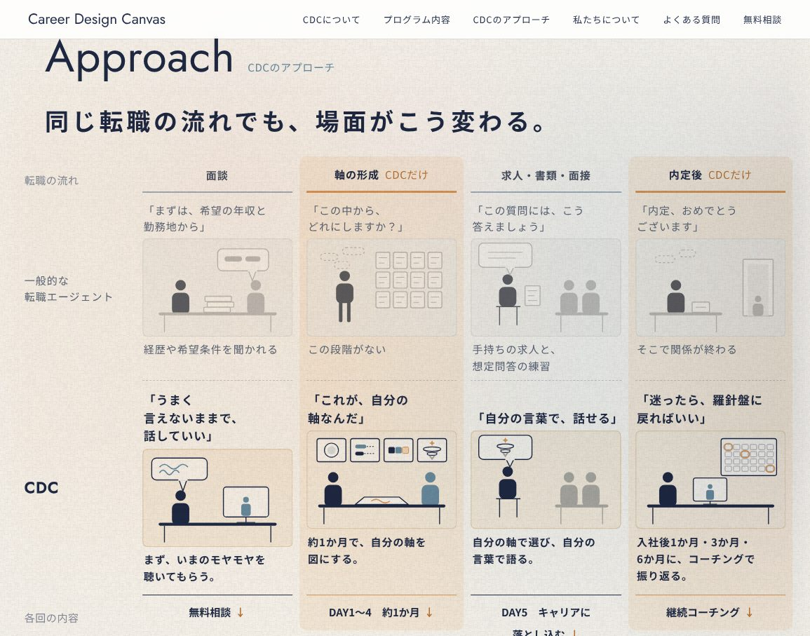

「同じ転職の流れでも、場面がこう変わる」見比べ（11/08）
見比べやすさを主にして4つ並べました。C と D は、11/08 の「見比べやすいのがポイント」を受けて足した案です。どれも見出しから表の下までが一画面に入ります（PC 1440×900）。スマホはいまの形（段ごとにエージェント｜CDC を左右）のままです。
B 流れを上に、2段を隣に
転職の流れを表の見出しに上げ、エージェントの段のすぐ下に CDC の段。場面ごとに上下で見比べる。

1155×907
ページで見るC B ＋ 見比べやすさの工夫
- エージェント側は色を落として控えめに、CDC 側の一言を大きく（どちらが主役か一目で）
- 「CDCだけ」の段（軸の形成・内定後）は、上から下まで淡い帯で通す
- 段に触れると、その段の上下一組だけが浮き、ほかは薄くなる（PC）

1155×907
ページで見る（段に触れてみてください）D 段ごとに横一列で、左右に見比べる
- 行＝段（面談・軸の形成・求人〜面接・内定後）。左にエージェント → 右に CDC
- 一つの段の違いを、目を左から右へ動かすだけで読める。右端に各回への入口
- CDC 側は淡い地で囲み、エージェント側は色を落とす。「CDCだけ」の段は左の線をオレンジに
 1155×907
1155×907 ページで見る
ページで見る